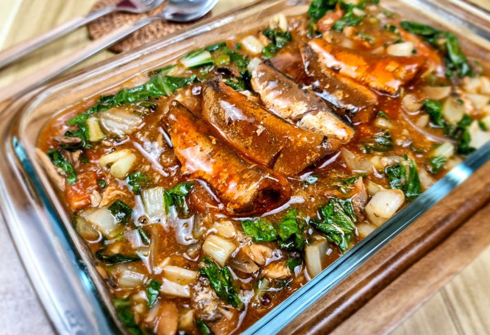

Ginisang Pechay With Sardines

Ginisang pechay with sardines made by sautéing canned sardines and
pechay in a sauce made by tomato, onion, garlic, pepper and salt
Serving ginisang pechay with sardinas is a hack if you want to feed
your kids an economical but nutritious at the same time. Follow our
recipe to make this scrumptious dish in your home for your family and
relatives.
Ingredients
- 2 bunches of pechay tagalog
- 2 cans sardines
- 1 large tomato (chopped)
- 1 medium red onion (chopped)
- 5 cloves of garlic (minced)
- 1/2 teaspoon ground pepper
- 1/2 teaspoon salt (or to taste)
- 1/4 cup water
Steps
- Wash and prepare the pechay. Remove the ends and then chop into
smaller pieces. Separate the stems and the leaves. Transfer them
to a container and set aside.
- Heat some oil in a pan. Add the onions and garlic and saute them
for a few minutes until aromatic. Add the chopped tomatoes and
saute for a few minutes. Gently crush them while sauteing to
soften and release the juice.
- Add the sardines including the sauce. You may crush the sardines
lightly if you like.
- Once the sauce starts to boil, add the chopped stems of the pechay
tagalog. You may add some water to thin out the sauce a little.
Cover the pan and let it simmer for a couple of minutes.
- Add the pechay leaves and mix gently. Add around 1/4 cup of water
to cook the pechay leaves. Season with salt and pepper. Do a last
stir before turning the heat off.
- Transfer the ginisang pechay with sardinas to a serving plate.
Enjoy this with a lot of hot steaming rice. Yum!